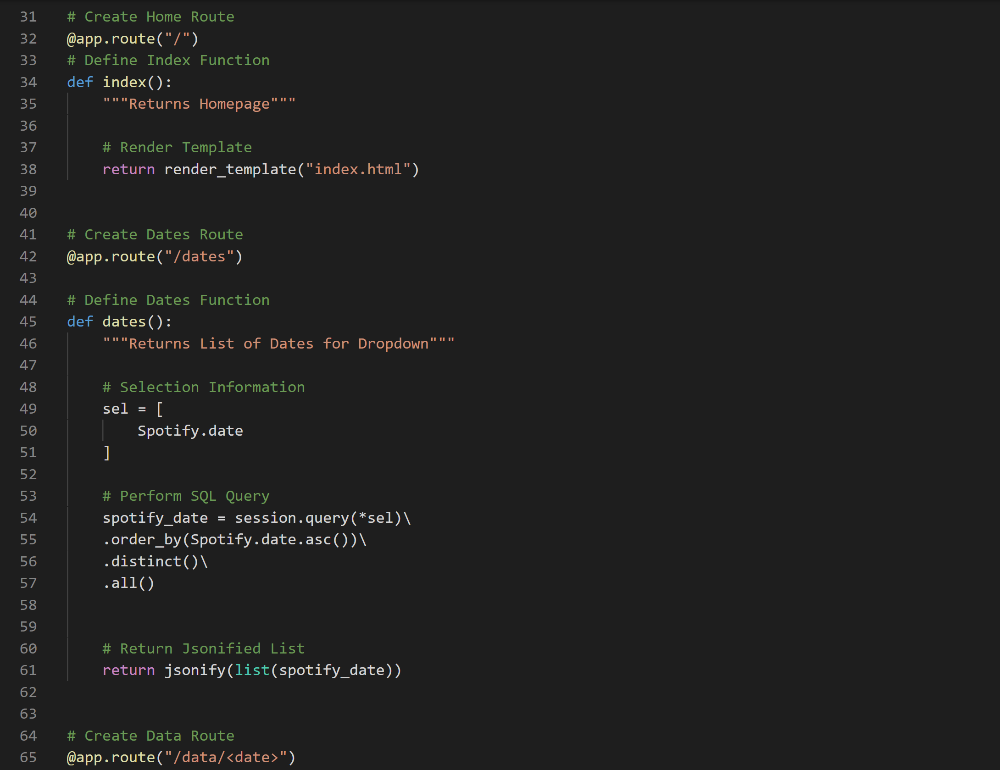

Spotify Dashboard
For this project, my teammates and I created a dashboard that even the die hard Apple Music and Google Play users can enjoy. Using Python, SQL, HTML, and JavaScript we created an interactive dashboard that allows you to select a date and see the top song for that day in 2017. Our dashboard provides you with information on the top song of that day with three visualizations. The bar graph supplies details on which countries had the highest stream count for the song. The interactive gauge states how many cumulative days that song remained number one on the charts. Lastly, our line chart represents daily streams of the song in the United Stastes.
ETL With Python
For our data munging we did a standard ETL process. We extracted our data as a CSV from Kaggle.com and loaded it into Jupyter Notebook. We then created our database in PostgreSQL and made a table for our Spotify data to live.
Our next step was to transform our data and load it into the database. For our transform, we needed to change the column names to fit the ones we created for our database. Once the column names had been transformed, it was time to load it into PostgreSQL. To do this, we used SQLalchemy to make a connection string to Postgres and set our engine. Finally, we used the "to_sql" function to load it into our database.
Flask App
To make a route from our database to our JavaScript and HTML, we needed to include a Flask app.
As you can see above, we created routes to to our index.html, our dates, and our data. We also requested that it return the data from the CSV as a JSON to used in JavaScript. Not pictured, we create routes for our streams, our guage, and our yearly streams.
HTML
Our HTML was a very basic backbone to run our dashboard. It did was not made with bells and whistles, but it contained everything we needed to get our dashboard operating and looking good like Bootstrap, JQuery, Plot.ly, and JavaScript. Additionally, it how we set up our titles for our visualizations and where we created wells for the visualizations to live.
JavaScript
Using D3 with JavaScript, we were capable of making our visualizations interactive. This is where is all came together as we created our dropdown menu and created our different visualizations. With D3, we were able to match our graphs and guage rgba color with the exact green that is used by spotify.
JQuery
Our project assignment required that we integrate another form of Javacript into our design. So we chose to use JQuery to take care of our CSS. We had already created our CSS file, so this was a pretty simple transition.
Please feel free to reach out with questions or requests of more detail explanation and code!